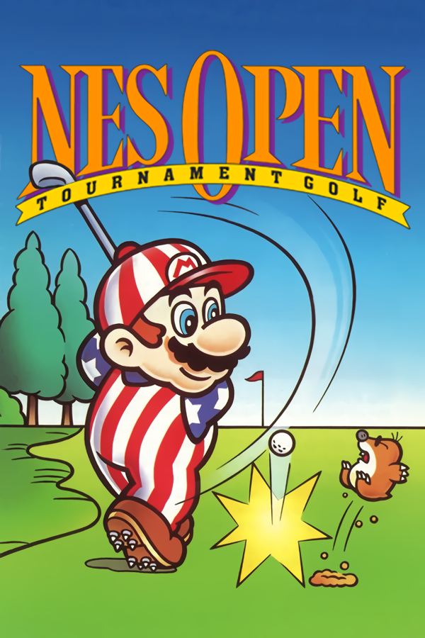

|  | |
| Playtime | Not Played |
| Last Activity | Never |
| Added | 4/29/2025 4:51:34 |
| Modified | 4/29/2025 23:40:20 |
| Completion Status | Not Played |
| Library | Playnite |
| Source | |
| Platform | Nintendo Entertainment System |
| Release Date | 9/20/1991 |
| Community Score | 62 |
| Critic Score | |
| User Score | |
| Genre | Sports (golf) |
| Developer | HAL Laboratory Nintendo R&D2 |
| Publisher | Nintendo |
| Feature | Multiplayer Single Player |
| Links | Wikipedia Golf Japan Course Golf U.S. Course Mario Open Golf |
| Tag | [People] artist: Eiji Aonuma [People] artist: Mikio Mishima [People] composer: Akito Nakatsuka [People] composer: Shinobu Amayake [People] composer: Yumiko Kanki [People] director: Kenji Miki [People] producer: Masayuki Uemura [People] programmer: Kenichi Nakajima [People] programmer: Kyosuke Shirota [People] programmer: Satoru Iwata |
NES Open Tournament Golf, known in Japan as Mario Open Golf, is a 1991 sports video game developed by HAL Laboratory and Nintendo R&D2 and published by Nintendo for the Nintendo Entertainment System. It is the fourth golf game to feature Mario as a player character, after Family Computer Golf: U.S. Course.
NES Open Tournament Golf received mixed-to-positive reviews.
NES Open Tournament Golf is a traditional golf game incorporating certain characters from the Mario series. The player's primary objective is to hit the ball into each hole with the fewest strokes by the end of gameplay. Using a birds-eye view prior to the swing, the player can change clubs and the general direction and range that the ball will travel. During the swing, the view shifts to a third-person perspective and the player can determine the power the shot will have by timing a button press for a marker to stop at the desired point of the power meter then another button press to determine what kind of shot the ball will be. Various gameplay aspects can effect how the ball will travel such as wind and ball spin.
In the game, the player plays as Mario, with Princess Toadstool (Peach) acting as the caddie giving the player tips and information. In modes with options for multiplayer, the second player plays as Luigi, with Princess Daisy acting as the caddie.
NES Open Tournament Golf's original version, released in Japan as Mario Open Golf, has cut content from the international release of the game. Mario Open Golf features ninety unique playable holes spread across five courses whereas the international release features fifty four holes across three courses. Forty of the holes present in the international release are shared with the Japanese release of the game, such as how hole one of the Australia course in Mario Open Golf is hole nine in the US Course internationally. Other holes in the international release share layouts with the original version but were changed in order to decrease the difficulty.[citation needed] In the Japanese release, each course must be unlocked, with the only one available at the start being the Japan Course.[citation needed]
The background music between both versions differ, with the exception of a few tracks that are used in both. Minor graphical changes are present and are most evident between the two versions respective title screens.
Family Computer Golf: Japan Course, released for the Disk System on February 21, 1987, is similar to the original Golf, which was released for the Famicom in 1984. In this version of the game, players can consistently see the bird's eye view of the course on the right-side of the screen, while the left side of the screen consistently shows a third-person view. Two modes of play are available in the game, stroke play and match play. Though the course designs are similar to those found in NES Open Tournament Golf, the controls are slightly different. Players can choose between three different speeds at which they hit the ball, and they can also cycle between golf clubs. In this version the default club will always be a 1W, in comparison to later games in which an appropriate club would be pre-selected. The scorecard in this game is nearly identical to the one found in NES Open Tournament Golf. The game came on a blue disk card, when most disks at the time were yellow. The blue disk indicated that it could be used in machines called a Disk Fax as part of a contest in Japan. Players' high scores were saved on the disk, and by using the name entry feature in the game to enter their personal data, players could send the data to Nintendo using the Disk Fax. The winners of the contest received a golden disk containing a more difficult version of the game.
Family Computer Golf: U.S Course, released for the Disk System on June 14, 1987, is similar to the original Golf and Mario Open Golf. In this version of the game, a bird's eye view of the course is shown on the center of the screen, while the right side of the screen shows a third-person view. Once players are ready to hit the ball, the bird's eye view transitions to a screen with just the third-person view. This concept was slightly modified and used in Mario Open Golf, which was released in September 1991.
A version of NES Open Tournament Golf, branded as Mario's Open Golf, was one of the few titles released for Nintendo's PlayChoice-10 arcade machines.[citation needed] PlayChoice-10 games varied slightly from their original NES counterparts, as additional circuitry was needed to allow the game to run on the arcade machine. Mario's Open Golf for the PlayChoice-10 was most similar to that of NES Open Tournament Golf, more so than Mario Open Golf for the Famicom. In this release, similarly to the original Japanese version, there was no option for the tournament mode.[citation needed]
NES Open Tournament Golf was also released for the Nintendo Wii Virtual Console on June 18, 2007,[citation needed] Nintendo 3DS Virtual Console on July 5, 2012, and the Nintendo Switch Online service on October 10, 2018.
Mario Open Golf is one of the video games featuring in the manga titled Cyber Boy, by Nagai Noriaki, published by Coro Coro Comic and Shogakukan, from 1991 to 1993.
A microgame based on NES Open Tournament Golf appears in WarioWare: Twisted!. In the microgame the player must sink a putt before time runs out. This microgame was later featured in WarioWare Gold.
Mario's outfit from this game, which itself is from Family Computer Golf: US Course, is an alternate costume for the character in Super Smash Bros. for Nintendo 3DS and Wii U, as well as in Super Mario Odyssey and Super Smash Bros. Ultimate. Mario Golf: Super Rush and Mario Kart Tour also included Luigi's outfit in addition to Mario's.
German magazines Megablast and Play Time gave NES Open Tournament Golf scores of 71% and 62% respectively.[citation needed]
IGN gave a score of 7.5 upon its port to the Wii Virtual Console.
Eurogamer gave a mixed score of 5 out of 10, mainly criticizing the game for its outdated jerky controls.